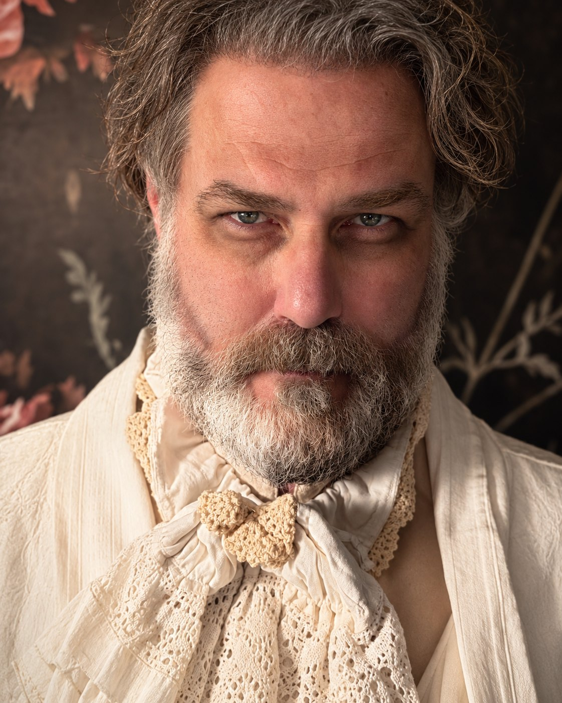
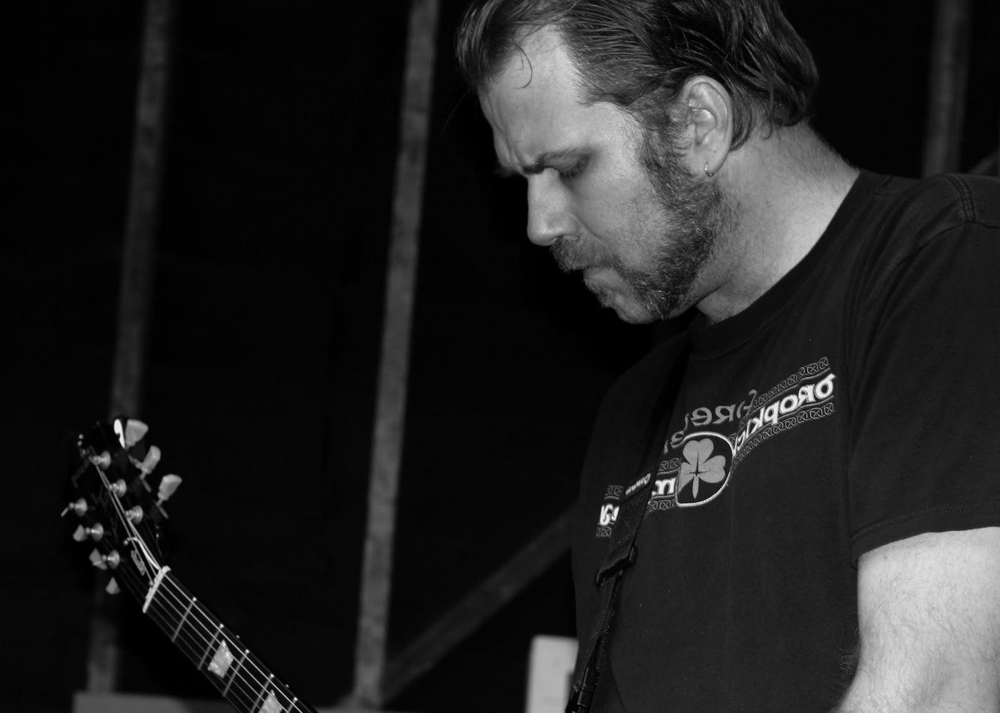

The Everyman
Rob in High Fidelity. Jerry in The Full Monty. Lovable, scruffy, and easy to believe.
Asheville, North Carolina
Actor · Lyric Baritone · Guitarist
SAG-AFTRA · Actors’ Equity Association
Sheldon Poplin Morley formed when a white-hot meteorite of pure rock and roll crashed into an active volcano in Kaneohe, Hawaii, on a cloudy September morning in 1975. Any resemblance to the parents who raised him is purely coincidental.
Sheldon grew up an Army brat, moving from Hawaii to North Carolina, Louisiana, Japan, and Las Vegas before he found a home in Los Angeles at 18. He learned guitar young, joined show choir and drama programs, and discovered that the stage was his “beautiful place.” He took every program that put him on it, including Theatre Arts coursework at Santa Monica College, where he performed in The Scarlet Pimpernel and Evita.
His lyric baritone has won recognition at theatre festivals, and his band, Manic Automatic, has drawn crowds to The Viper Room and other Los Angeles venues. At 6′6″ with a barrel chest and a honeyed voice, he commands any stage as a frontman.
On the theatrical stage, Sheldon has played accessible everymen such as Rob in High Fidelity and Jerry in The Full Monty, villains such as Chauvelin in The Scarlet Pimpernel, and leading men such as Juan Perón in Evita. His reviewers call him lovable, spontaneous, and a star-making lead.
Sheldon takes an audience on a journey with his characters and his music. His life experience and empathy let him find an emotion in a single moment and distill it into something the viewer can share. He now works from Asheville, North Carolina, and explores his artistic endeavors in Appalachia.
Available for commercial, television, film, musical theatre, theatre, and vocal work. Seeking theatrical representation.

Rob in High Fidelity. Jerry in The Full Monty. Lovable, scruffy, and easy to believe.
Chauvelin in The Scarlet Pimpernel. Monsieur Thénardier in Les Misérables.
Juan Perón in Evita. Mr. Boddy in Clue: The Musical.
Lead vocalist and guitarist with Manic Automatic, on stage at The Viper Room.
| Production | Role | Company |
|---|---|---|
| Of Mice and Men | Lenny | Palos Verdes Performing Arts, Norris Theatre |
| The Full Monty | Dave Bukatinsky | Palos Verdes Performing Arts, Norris Theatre |
| High Fidelity: The Musical | Rob Lead | Hunger Artists Theatre Company |
| The Full Monty | Jerry Lukowski Lead | Theatre7 |
| Les Misérables | Monsieur Thénardier | Gardiner West Spring Auditorium |
| Les Misérables | Monsieur Thénardier | California Theatre of the Performing Arts |
| The Full Monty | Dave Bukatinsky | Candlelight Pavilion Theatre |
| Crazy for You | Lank Hawkins | Morgan-Wixson Theatre |
| Sweeney Todd | Ensemble | Morgan-Wixson Theatre |
| Clue: The Musical | Mr. Boddy Lead | Mercury Theatre Company |
| The Jungle Book | Akela / Kaa | Hunger Artists Theatre Company |
| The Scarlet Pimpernel | Chauvelin Lead | Santa Monica College |
| Evita | Juan Perón Lead | Santa Monica College |
| The Merchant of Venice | Duke of Venice | Met Theatre Company |
| WASP | Father | Met Theatre Company |
| Tango ’Til They’re Sore | The Man | Inkwell Theatre Company |
| The Architect of Destiny | Death | Inkwell Theatre Company |
| Only the Dead Know Burbank | Delivery Guy | Inkwell Theatre Company |
| Title | Role | Details |
|---|---|---|
| Raising Hope, Season 4, Episode 17, “Baby Phat” | Intimidating Criminal | Fox. Directed by Garret Dillahunt. |
| Pot in the Garage (Short) | Henry Lead | Directed by Morgan Buck. Written by Emily Lawrence. |
| Zombie Speed Dating (Short) | The Zombie Lead | Directed and written by Kevin Gaffuri. Produced by Ryan Omega. |
| Alien Apocalypse | Fisherman Bob (ADR voice) | Sci Fi Channel |
Voice & MusicLyric baritone. Professional guitarist and vocalist.
DialectsReceived Pronunciation, Southern (Texas and Louisiana), Cockney.
LanguagesEnglish (native), Spanish (elementary).
ProducingExecutive producer and founding member of Nerds Making S#*%, a web-based short-film group.
AlsoCan raise just one eyebrow.
“Of course none of the above would matter a whit were Hunger Artists’ intimate staging not blessed with a star-making lead performance by Sheldon Morley heading an all-around splendid cast… It’s easy to buy this big, scruffy dude as owning a rundown record shop, loving his 45s more than life itself, and screwing things up with a babe like Tara Pitt’s Laura (just as it’s easy to believe that Laura would fall for this Rob’s big big heart). Effortless at chewing the fat with the audience and never anything less than spontaneous in his interactions with other characters, Morley happens also to have just the right rocker pipes to belt out Rob’s songs precisely the way they should be belted.”
“Sheldon Morley is the first Jerry I’ve seen who truly looks the part… Morley is also an excellent actor, especially in his touching scenes with his young son… and his soaring rendition of Breeze off the River is moving indeed.”
“As focal character Jerry Lukowski, a ne’er-do-well divorced dad struggling to salvage his relationship with his son, Sheldon Morley scores equally well in boisterous comic numbers and in poignant ballads, and his characterization likewise hits all the right notes.”
“As for Rob, (Sheldon) Morley is very lovable, while still giving off a slacker vibe. There is something endearing about him even as he slides into an ever-growing depression over his breakup… the audience cannot help but like him.”
“A delightfully energetic musical… Kudos to a stellar cast (especially Sheldon Morley as Rob, who’s seldom off stage)… The songs are fun, clever and well-performed.”
Quotes come from his former website. The Stage Scene LA review of The Full Monty (Theatre7) was checked against the original.

Sheldon fronts Manic Automatic and formerly played lead guitar for The Bad Bad Things.
His bands have played Los Angeles stages including Whisky a Go Go, The Viper Room, Firefly, the former House of Blues on the Sunset Strip, The Troubadour, and The Roxy. Manic Automatic played The Roxy. He holds credits on three full albums and has several solo projects.
Sheldon played bass with Sportive Tricks for several years, until he moved to North Carolina. The Southern California Celtic folk band grew out of the Renaissance faire circuit and mixes Irish standards and sea chanteys with nerd culture.
Sheldon arranged and recorded the sea shanty collection for 7th Sea: Second Edition, the tabletop roleplaying game that raised $1,316,813 on Kickstarter. Game designer John Wick, a former bandmate in The Awful Lot, chose him for his “punk rock harmony” expertise. Wick previewed three tracks in Kickstarter Update 42: “Roll the Old Chariot,” “Running Down to Numa,” and “Pay Me My Money Down.”
Manic Automatic on iTunes
The Bad Bad Things on Facebook
Sportive Tricks
Recognition: Sheldon has won recognition for his lyric baritone at theatre festivals, and critics have called out his singing in The Full Monty and High Fidelity (see Reviews above).
Musician. Dad. Former mayor of Mount Gilead, North Carolina.
Sheldon plays all three roles at once and treats the balance between them as part of the craft. The stage rewards presence, and so do a song, a daughter, and a council chamber.
Frontman of Manic Automatic, former lead guitarist of The Bad Bad Things, and a performer on three full albums, and several other solo personal music projects.
Sheldon stepped back from auditions after his daughter arrived in 2017 and focused on raising her. He returns to acting with a fuller life to draw on.
Sheldon served as a mayor in Mount Gilead, North Carolina, and carries that experience of leading, listening, and speaking to a room into every scene he plays.
Based in Asheville, NC
Sheldon is available for commercial, television, film, musical theatre, theatre, and vocal work, and seeks theatrical representation. Send a note to start the conversation.